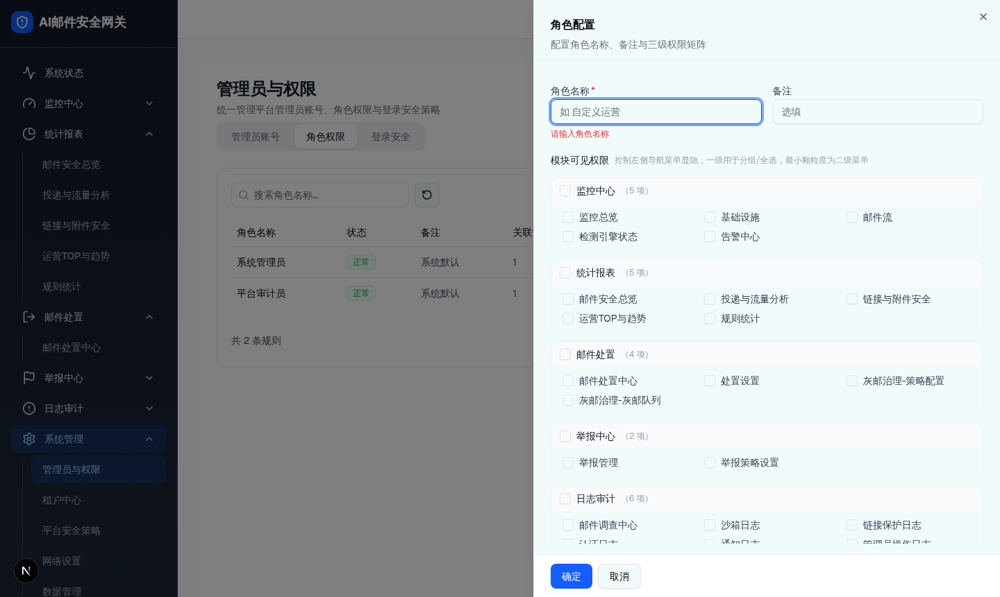
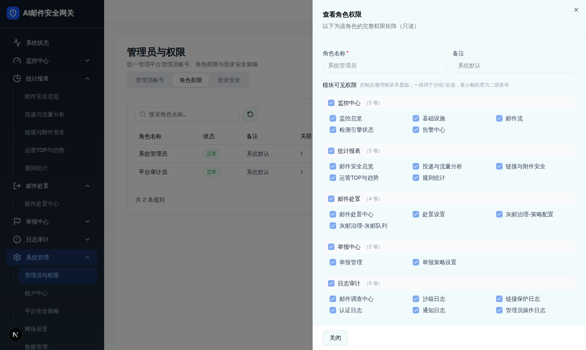

| 属性 | 规格 | 形态/角色差异 |
|---|---|---|
| 所属组件 | 2.3 角色权限 Tab（RolePermissionTab） | [Base] 全形态共用 |
| 主文件 | admin-users/index.html | [Base] — |
| 触发路径 | 「新建角色」→ 角色配置（可编辑）；行「查看」→ 只读矩阵；行「编辑」→ 编辑；行「删除」→ 删除确认（linkedAdmins>0 拦截） | [租户管理员] 自定义角色才出现编辑/删除 |
| demo 组件 | role-permission-tab.tsx 的 <Sheet sm:max-w-2xl>（模块可见权限 + 操作权限矩阵） | [Overlay] 模块树按 scope 裁剪 |
| 标题 | 只读=「查看角色权限」/「以下为该角色的完整权限矩阵（只读）」；新建=「角色配置」；编辑=「编辑角色」/「配置角色名称、备注与三级权限矩阵」 | [Base] 一致 |

| 规则 | 说明 | 形态/角色差异 |
|---|---|---|
| 一级模块 checkbox | 三态（全选/半选 indeterminate/未选）；勾选批量全选其下二级，取消清空这些二级操作权限 | [Base] 一致 |
| 二级可见 checkbox | 取消可见 → 清空该二级操作权限；回写一级三态 | [Base] 一致 |
| 操作联动 | 勾「编辑」自动勾「查看」；取消「查看」自动取消「编辑/审批/删除」 | [Base] 一致 |
| 不支持的操作 | approve/delete=null 显示「-」（如监控/统计/日志类不支持审批删除） | [Base] 由模块定义决定 |
| 作用域裁剪 | 平台视角 7 组（剔除安全策略/智能体/高管保护）；租户视角剔除系统管理 | [平台管理员]/[租户管理员] 模块树不同 |

删除后该角色将不可恢复。若角色已关联管理员，需先变更其角色。
| 元素 | 说明 | 形态/角色差异 |
|---|---|---|
| 只读矩阵 | 所有 checkbox disabled；角色名称/备注只读；底部仅「关闭」（无「确定」） | [Base] 系统默认角色只读 |
| 删除确认 | linkedAdmins>0 → Toast「该角色已关联 N 个管理员，请先变更其角色」并不删 | [Overlay] 当前 demo 仅租户自定义角色有入口 |
| 成功 Toast | 角色已创建 / 角色已更新 / 角色已删除 | [Base] 一致 |
| 比对项 | demo 实际 DOM | 提取的 HTML | 是否一致 |
|---|---|---|---|
| 抽屉根 | [role=dialog] sm:max-w-2xl（只读态 670 节点） | 结构一致（预览取代表性子集） | 精简：完整见截图 |
| 模块可见组数 | 平台视角 7 组（监控中心/统计报表/邮件处置/举报中心/日志审计/系统管理/用户与权限管理） | 预览取 2 组示意 | 精简：截图为全 7 组 |
| 操作矩阵列 | 菜单 / 查看 / 编辑 / 审批 / 删除（5 列） | 同 | 一致 |
| 审批/删除 null | 监控/统计/日志显示「-」；邮件处置/举报可勾 | 同（示意 2 行体现） | 一致 |
| 只读态 | checkbox 全 disabled，底部仅「关闭」 | 说明一致 | 一致 |
| 删除确认 | [role=alertdialog]「删除角色「x」？…需先变更其角色。」 | 同 | 一致 |